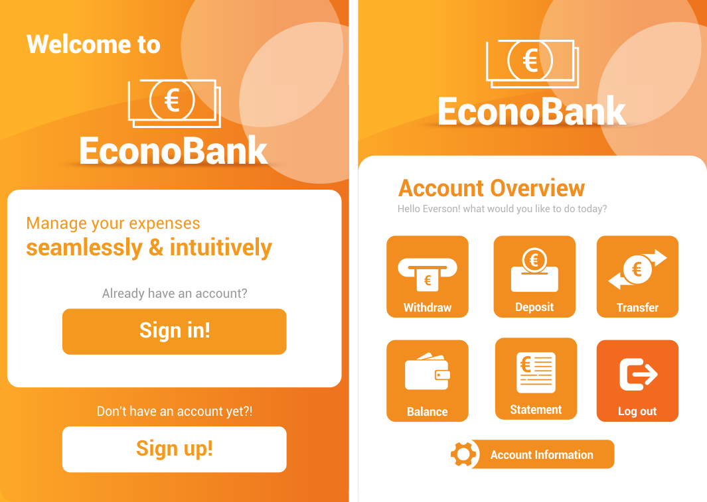

Intro

Hello, I’m Everson Spinola, a 31-year-old professional currently residing in Dublin, Ireland, holding a Stamp 4 visa.
My journey began in Brazil, where I spent five years honing my skills as a Graphic Designer.
Seeking to expand my horizons, I moved to Ireland to pursue studies in English and Information Technology,
graduating with a Bachelor of Science in IT in November 2022.
Recently, I achieved ITIL 4 certification and am currently looking for a developer job in Dublin.
I’m excited about the opportunities these certifications will open up in my career.
I’m eager to transition from my role as a Graphic Designer to a Software/Web Developer or other IT positions.
My background in design is a valuable asset in application development, being beneficial in user interface (UI) design and front-end development.
During my college years, I gained experience in creating projects using various programming languages and technologies,
including Python, Java, SQL, NoSQL, HTML, CSS, PHP, JavaScript, JSON, XML, and cloud platforms like Google Cloud and AWS.
This diverse skill set makes me a strong candidate for roles in the IT sector.
Thank you for taking the time to learn more about me!
Feel free to check out my awesome projects.
Work
Employee Management CRUD System
Python & Django Web application for managing employee records.
This project is a CRUD web application built with Python and Django, designed to manage employee records efficiently.
Users can Create, Read, Update, and Delete employee data through a sleek and responsive interface.
It features PostgreSQL integration for secure data storage, Bootstrap 5 for modern UI, and Django Crispy Forms
to enhance form rendering. The project follows best practices in Django Models, Views, and URL routing to ensure
scalability and maintainability.
This system highlights my full-stack development skills, covering both backend logic with Python and frontend styling
using Bootstrap 5. It serves as a strong learning experience for building scalable web applications with Django.
To check out the Django CRUD source code,
click here!
Bank Application
Intuitive Java banking application software.

Econo Bank is a Banking application that supports essential banking operations such as withdraw, deposit, transfer,
balance check and statement history visualization. The application includes sign-up, sign-in, account information editing and account recovery features.
It was developed in Java, featuring a JavaFX Graphic User Interface (GUI) with design elements created in Corel Draw.
This project utilized Maven as the build automation tool for project and dependency management and was built using the Model-View-Controller (MVC)
architectural pattern. To enhance safety, it's using encapsulation with strict access modifiers.
This application serves as a learning platform for JavaFX, building upon my previous experience with Java Swing GUI.
The application aims to provide a practical example of a banking system with a modern interface and robust backend storage using MySQL database.
To further ensure security and efficient memory management, the application implements the singleton pattern across all classes, allowing only one instantiation of each class.
To check out Econo Bank github source code,
click here!
Point of Sale (POS) & Management System
Music/Movie rental shop application software.

This project is a robust Rental and management system, developed using Java and featuring an integrated Java Swing Graphical User Interface (GUI).
It’s backed by an SQL database, providing a solid foundation for data management.
The system is designed with user-friendliness in mind, enabling rental shop staff to easily issue rents, view in-stock and rented titles,
and manage customer and title records with functionalities to register, search, update, and delete entries.
The architecture of the system leverages the widely recognized MVC design pattern, ensuring logical organization and facilitating faster system maintenance.
Additionally, the system is encapsulated using access modifiers, further enhancing its robustness and maintainability.
To check out Ultra-Vision github source code,
click here!
In case you would like to have a look at my Graphic Design Portifolio Click here.
Contact